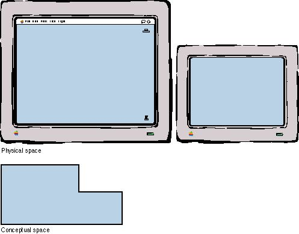
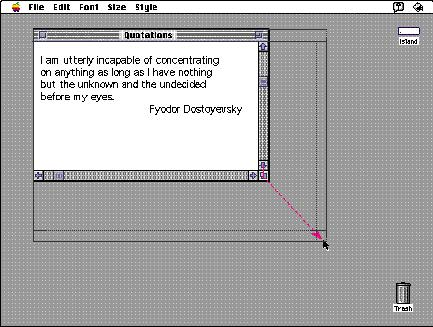

|
Changing the Size of a WindowYour application determines the minimum and maximum window size. Base these sizes on the physical size of the display. When a user has more than one monitor attached to the computer system, calculate the display size of all the attached screens. With the Monitors control panel, the user determines the relationship of the screen space on one monitor to that on another. Figure 5-25 shows a conceptual view of the space a user has to work in when more than one monitor is connected to the computer.Figure 5-25 Multiple monitors and conceptual work space  The user changes the size of the window by using the size box in the lower right corner of the window (if a window has one). When the user presses the size box and drags the pointer, a dotted outline of the window moves with the pointer. The upper-left corner of the window remains in the same place. It acts like an anchor on the screen; the window shrinks or grows from that point. The outline of the lower-right corner of the window follows the pointer. When the user releases the mouse button, redraw the window in the shape of the dotted outline. Figure 5-26 shows how a window changing size appears to the user. Figure 5-26 A window growing larger  |
|
|
When a user changes the size of a window, it affects only
how much of the document is visible in the window. It
doesn't affect the position of the upper-left corner of the
window or the appearance of the part of the view that's
still showing.
Exceptions to this rule are commands that by definition change the view of the window's contents. An example is a Reduce to Fit command, which changes the scale of the view to fit the size of the window. If the user chooses this command, and then resizes the window, your application should change the scale of the view appropriately. See the chapter "Window Manager" of Inside Macintosh: Macintosh Toolbox Essentials for details on changing the size of a window. |